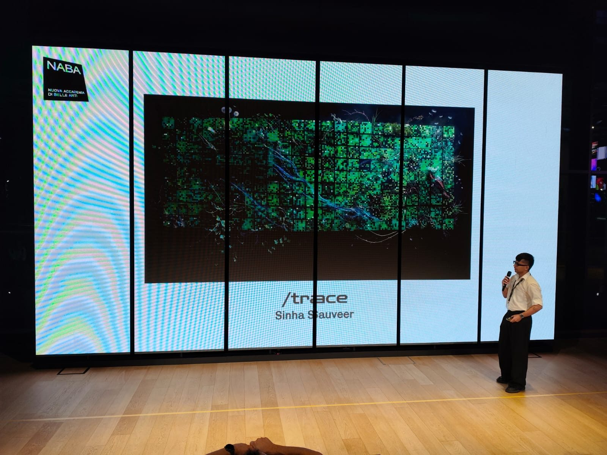
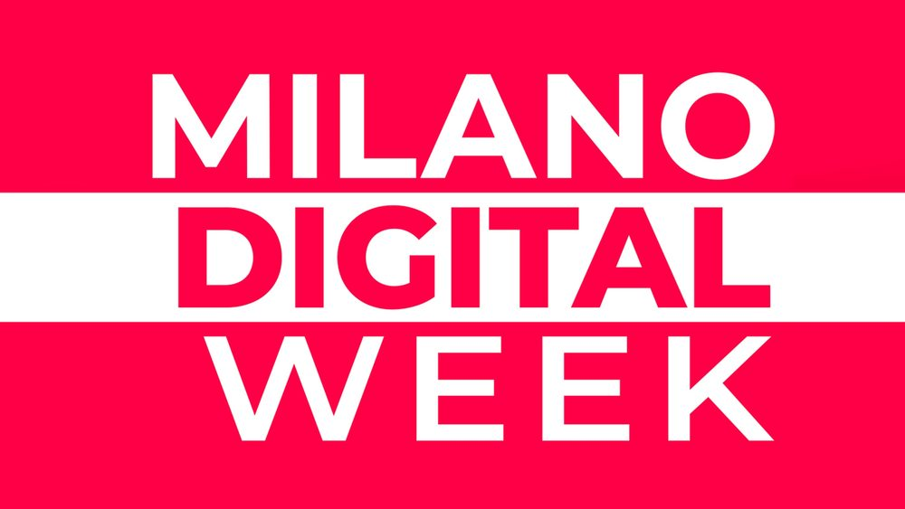
Selected forMilano Digital Week 2026/trace: A Living Portrait of Ethereum
A live mosaic that lets anyone see how a blockchain works, no jargon required.
Skip to the solutionProblem
Blockchain data is public, but you can only read it one row at a time. Most people never see the bigger picture.
Solution
A live mosaic: every block is a tile, every transaction a pixel. It reads in seconds.
Outcome
Shown live at Milano Digital Week. Visitors new to blockchain left understanding how it works.
What I owned
Framed the problem, defined the audience and the portrait concept.
Journey, information architecture and the exploration features.
The data-to-visual mapping, colour, states and palettes.
Designed for the browser and the nine-screen installation.
Built the live web prototype and presented it at STEP.
Built solo: live Ethereum data feed, rendering and procedural sound.
The challenge
A new block lands on Ethereum roughly every 12 seconds. Almost nobody can see it happen.
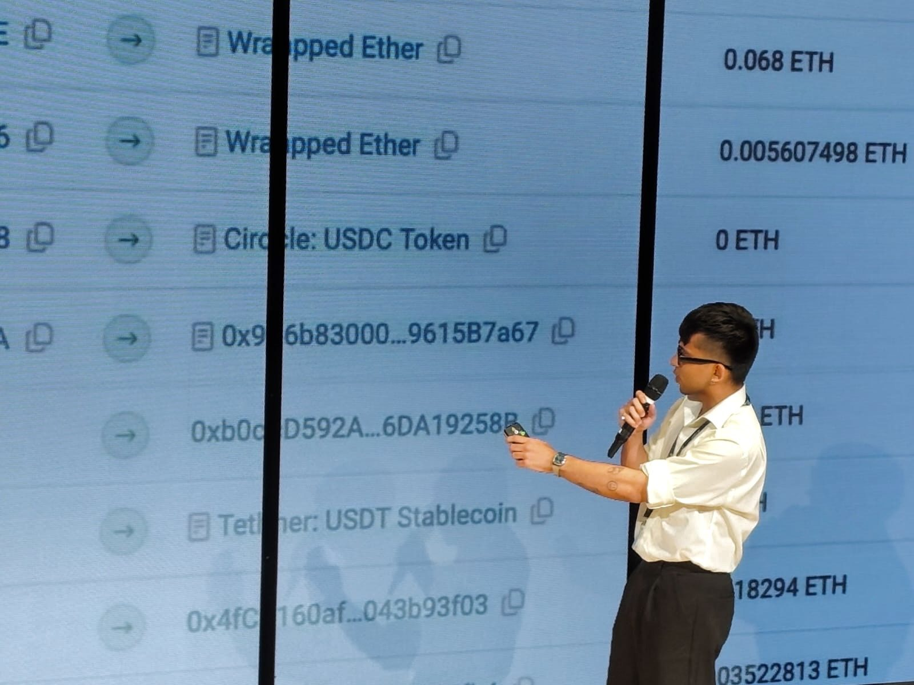
For newcomers
The terminology and raw records are a wall. There's no way in.
For everyone
Even with every record available, the network's overall rhythm stays invisible.
Why it matters: blockchains already move money, art and ownership, yet most people only meet them as headlines.
The tension
Simplify too much and the analogy misleads.
A pretty picture that says nothing true about the network.
Explain too much and newcomers leave.
Accurate, but back to the wall of jargon.
Design question
How might we make blockchain activity interactive and understandable, in simple language?
Who it's for
Designed for the newcomer first.
The piece had to work for someone who has never heard the word blockchain, and still reward someone who has.
The newcomer
Primary audience
New to blockchain and doesn't know what it is. Curious, but finds the topic intimidating.
The curious insider
Secondary audience
Knows the basics, maybe holds some crypto. Wants to see what the network is actually doing.
Key decisions
Not more data. A better way to meet it.
A portrait, not a dashboard
Decision
Show the network as a generative composition.
Why
People perceive the whole first, then choose to look closer.
Trade-off
Less precise than a chart, so inspection tools had to exist.
Options considered
Every transaction becomes a trace
Decision
One pixel per transaction, styled by its data.
Why
It links a single action to the network it belongs to.
Trade-off
No visual property may imply a metric the mapping doesn't define.
Options considered
User journey
From "what is this?" to "so that's how it works."
-
Arrive
"What am I looking at?"
A wall of glowing tiles that keeps changing.
Live mosaic -
Notice
"Something just happened."
A new tile lands. A white pixel pulses. The sound shifts.
Whale pulse · sound -
Ask
"What does a tile mean?"
The analogy is explained in plain language.
Guide · header stats -
Explore
"Show me more."
Open a block, scrub back in time, track a wallet.
Block detail · timeline -
Understand
"So that's a blockchain."
Blocks, transactions and fees now have a picture.
Daily portrait
Information architecture
The more you engage, the deeper it goes.
I layered the prototype by attention. Nothing on the first layer needs explaining.
Constraints
What the design had to work within.
DataThe chain sets the tempo
One block every ~12 s. So whale pulses, sound and the timeline hold attention in between.
DataBehaviour, not people
Records show addresses, never identities. So the portrait shows activity, and wallet tracking needs an address.
ComplexityJargon on every layer
Hashes, gas, gwei, smart contracts. Most people don't know what a blockchain is. So no term appears without a plain-language name, like "direct payments" or "trading coins".
LedgerA list that never ends
The ledger only grows; nothing is edited or deleted. So the canvas fills, then saves as a daily portrait you can scrub back through.
What changed along the way
The first version was beautiful. And silent.
Before
Just the mosaic, no words. It looked striking.
Feedback
In a crit, people asked "what am I looking at?" and stopped there.
Change
Added live header stats and a plain-language guide that explains tiles, pixels and fees.
Result
At STEP, visitors could answer "what's a tile?" on their own.
How it works
From transaction to portrait.
Daily portraits
Every 24 hours, a new artwork.
Think of it as a weather report for money. Some days the network is calm and cheap, other days it's busy and expensive. The mosaic paints that day's weather as it happens, and at midnight it saves itself as a finished portrait. Then the canvas clears and a new day begins, so no two days ever look the same.
- Calm dayFew tiles, soft colours. Not much money moving.
- Busy dayDense, bright tiles. Lots of people sending and trading.
- Big movesWhite sparks. Someone just moved a large amount.
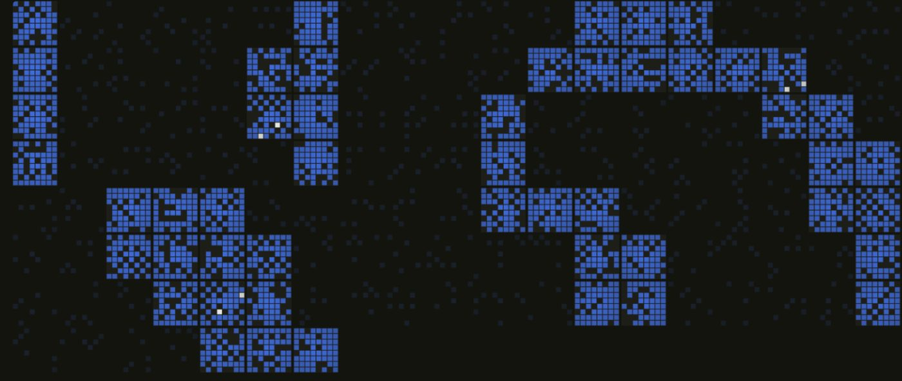
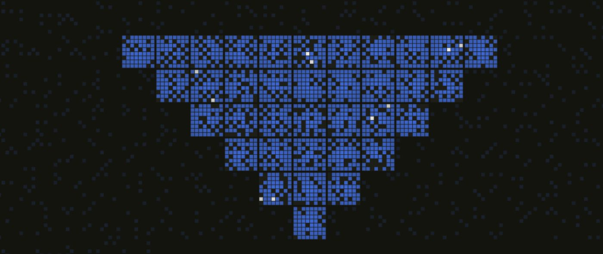
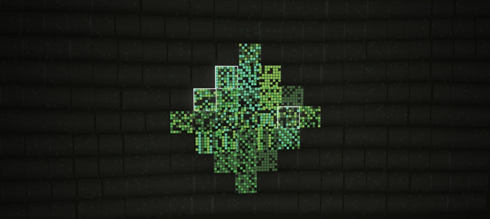
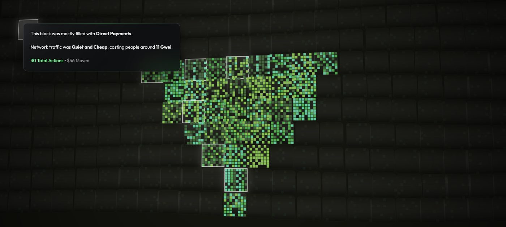
Day 01Focus mode
Or just let it be art.
You don't have to click anything. In focus mode, the interface disappears and /trace becomes a living painting for a wall or a second screen.
It works like watching the sea: you don't need to know how waves work to notice when the water gets rough. Leave it on and you start to read the trends by feel. When the tiles crowd in, the network is busy. When one colour takes over, most people are doing the same thing. When white sparks appear, big money is on the move.
Visual system
Every visual rule points back to the data.
01 · Tile anatomy
- 1 tile = 1 block. Fills left to right, then starts a new canvas.
- 1 pixel = 1 transaction. Colour shows its type.
- Glow = whale. Over $50k. Adds sub-bass.
02 · Transaction colours
#22B865#2FD6C8#C2E54A#86E8A8#0F6B47#FFFFFF03 · Gas fee → saturation
04 · States
05 · Rules
- R1Every visual property maps to real data, or it isn't used.
- R2Colour shows type. Saturation shows cost. Glow shows size.
- R3The whole must read before any label is needed.
06 · Palettes
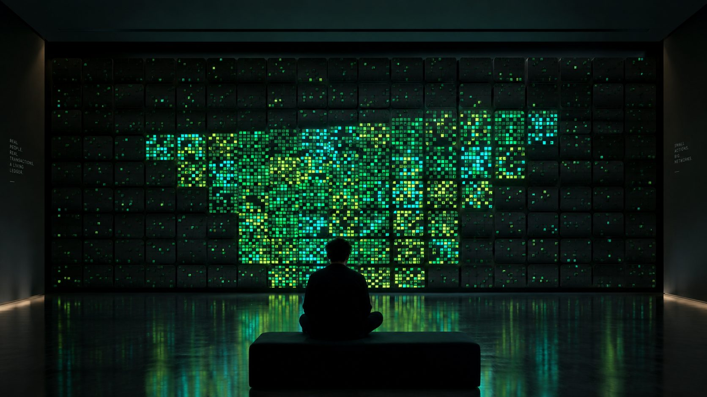
What I saw at STEP
Intrigued at first. Then it clicked.
I spent the event talking with visitors as they used the piece. The same arc came up again and again.
Before
- Most had never heard of blockchain.Many arrived with no idea what it was.
- Many were intrigued from the start.The glowing wall made them stop and ask what it was.
During
- The analogy made it simpler.Tiles and pixels gave them something to hold on to.
- Live was the hook.People loved watching the real network as it happened.
After
- They understood it better.Visitors said they now got how a blockchain works.
- They wanted to know more.Many left genuinely interested in blockchain.
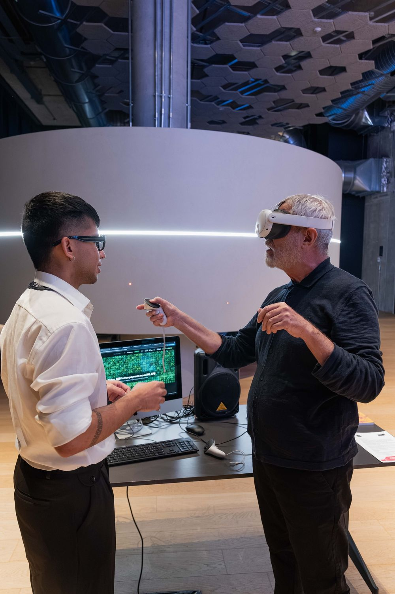
"I've heard 'blockchain' for years and never got it. This, I get."Visitor at STEP
"Wait, this is happening right now? Every square?"Visitor at STEP
"The tiles made it simple. I'd actually read more about this now."Visitor at STEP
Gathered from conversations at the event, not a formal study. Next, I'd run structured sessions with first-time users to see which parts of the analogy carry the understanding.
Outcome
From a student project to a public audience.
Milano Digital Week 2026
STEP FuturAbility District, Milan
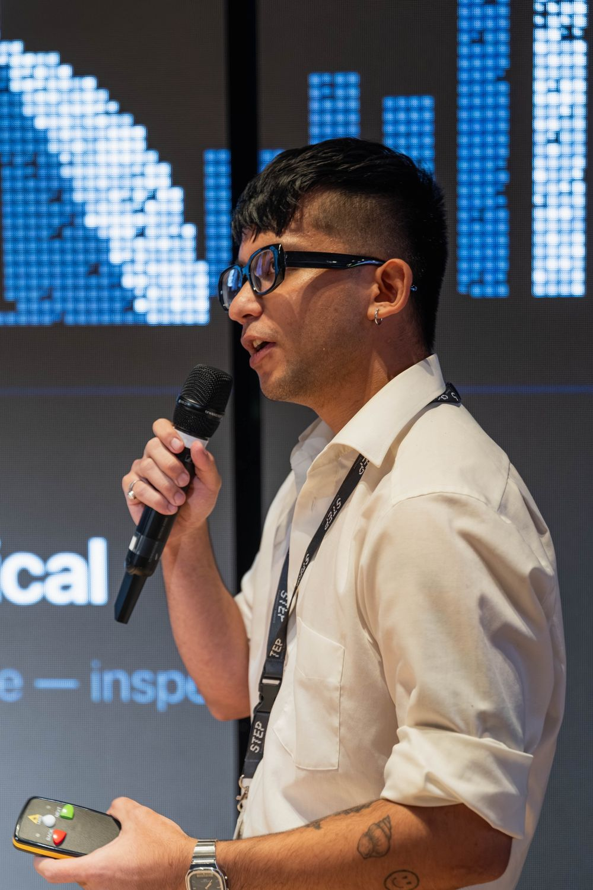
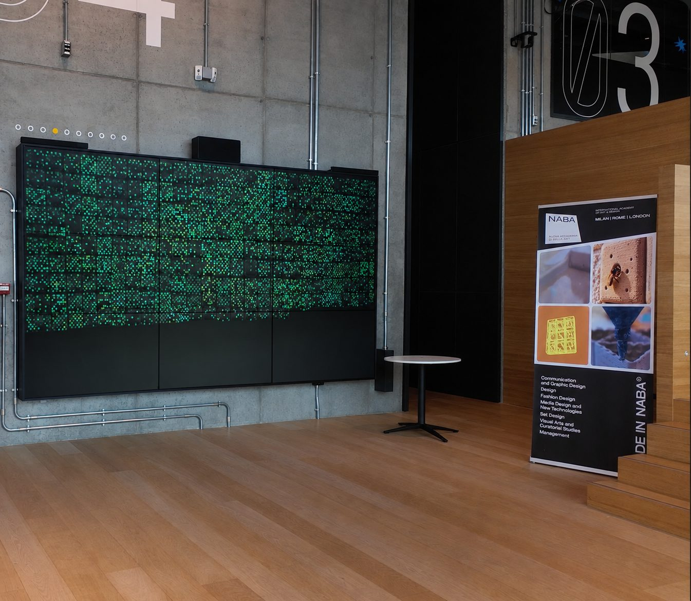
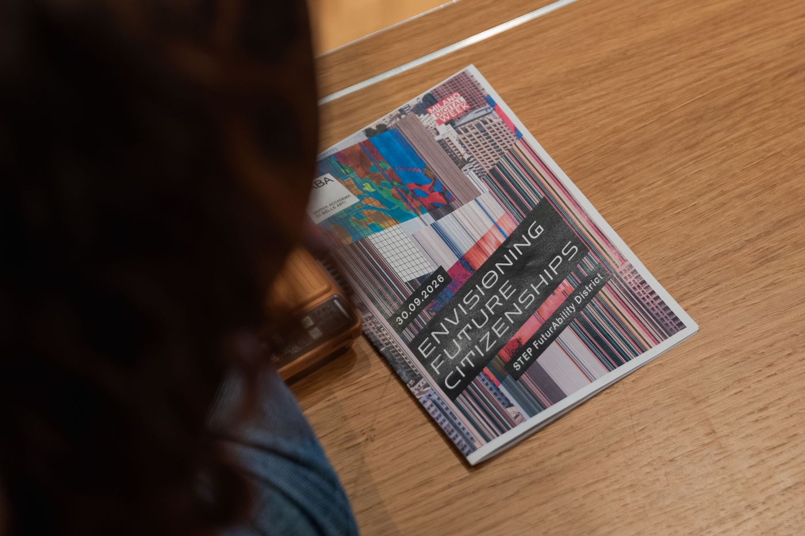
Takeaways
Complexity doesn't always need another interface.
Representation shapes understanding.
How data looks decides how people meet it, before they read a number.
Every visual needs a real link.
A striking image isn't enough. Each rule has to point back to the data.
One action is almost invisible. Together, they become a portrait.
Explore the live prototype